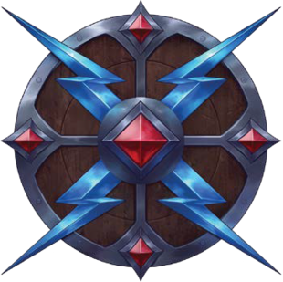
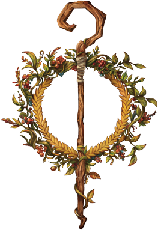

Os Deuses
Avandra, a Portadora do Destino
Avandra é a deusa da liberdade, comércio, viagens e aventura. Ela encoraja seus seguidores a se aventurarem no desconhecido. Aqueles que a seguem são levados aos poucos templos dedicados a ela nos centros da civilização, podendo ser encontrados perto de estradas bastante movimentadas. Seus adoradores incluem mercadores, espíritos livres e aventureirosMandamentos da Portadora do Destino
- A sorte favorece os ousados. Seu destino depende de você mesmo e fazer isso é o mesmo que andar ao lado Dela.
- A mudança é inevitável. Os justos devem garantir que essa mundança seja para melhor.
- Levante-se contra a tirania. Lute pela sua liberdade e a liberdade dos outros enquanto pude. Inspire aqueles que tomaram seu lugar na batalha.

Bahamut, o Dragão de Platina
Bahamut é o deus dos dragões de boa conduta e dos dragões metálicos. Ele encoraja seus seguidores a buscarem honra e justiça. Aqueles que o seguem encontram terras injustiçadas a procura de um herói. Seus adoradores incluem soldados, dragões e aventureiros.Mandamentos do Dragão de Platina
- Seja um modelo de honra e justiça.
- Golpeie o mal sempre que o encontrar, mas mostre compaixão para aqueles que se desviaram do caminho da justiça.
- Defenda os fracos, traga liberdade para aqueles que necessitam e proteja os ideais que representem a justiça.
Corellon, o Artista Arcano
Corellon, é a divindade da magia arcana e das feéricos. Os seguidores de Corellon são aqueles que buscam a arte em todos os seus trabalhos, tanto mágicos quanto mundanos. A Rainha das Aranhas e suas sacerdotisas são odiadas pelos seguidores de Corellon por levar os elfos drow para o caminho errado. Ele é comumente conhecido como o guardião da primavera. Seus seguidores incluem magos, pesquisadores e feéricos em geral.Mandamentos do Artista Arcano
- Crie, inspire e encontre beleza em tudo o que você faz.
- Siga os vestigíos das magias perdidas, locais esquecidos e de reliquias do passado.
- Combata os seguidores de Lolth, onde quer que estejam.
Erathis, a Portadora da Lei
Erathis é a deusa da civilização e das leis. Os seguidores de Erathis são aqueles buscam a orientação para governar ou julgar os cidadões. Seus seguidores incluem juízes, delegados e governadores.Mandamentos da Portadora da Lei
- Aceite a companhia e a ajuda de outras pessoas. Os esforços de um indivíduo perde a força contra as capacidades da comunidade.
- Esforce-se para dominar o selvagerismo do mundo em nome da civilização e proteja os pontos de luz e ordem contra o caos e as trevas.
- Defenda e reverencie o espírito de invenção. Crie novas cidades e colônias, construa onde sua inspiração brilhar e espalhe as leis de Erathis.
Ioun, a Mestra do Conhecimento
Ioun, também conhecida como mentora do conhecimento, é a deusa do conhecimento, profecias e habilidades. Os seguidores de Ioun são aqueles que buscam a expansão de seu conhecimento através da orientação da deusa. Seus seguidores incluem magos, cleros e pesquisadores.Mandamentos da Mestra do Conhecimento
- Desmascare aqueles que tentam corromper a Mestra.
- Defenda e ensine a importância da razão, da percepção e da verdade para guiar as emoções e o caminho das pessoas.
- Condene aqueles que mentem, mesmo entre seus aliados, pois aqueles que querem destruir a civilização ganha poder quando seus seguidores obscurecem a verdade. Jamais se rebaixe ao nível dos mentirosos.

Kord, o Senhor das Tempestades.
Kord é o deus da tempestade e o senhor da batalha. Antes de viagens maritimas ou batalhas, seus seguidores pedem sua benção para obterem sucesso. Os seguidores de Kord são aqueles abominam os covardes e seguem os grandes lutadores. Seus seguidores incluem atletas, guerreiros e marinheiros.Mandamentos do Senhor das Tempestades
- Coragem acima de tudo. Não há glória na covardia.
- Força é o caminho para a grandeza, mas a verdadeira grandeza vem com o uso responsável da força.
- A glória de Kord se espelha através da sua glória no campo de batalha.

Melora, a Mãe Natureza
Melora é a deusa da natureza e do mar. Ela zela pela natureza, boa colheita, garante proteção contra desastres naturais e orienta a passagens dos navios. Os seguidores de Melora são aqueles que estão necessitados da colheita ou de orientações no mar para sobreviverem. Seus seguidores incluem caçadores, fazendeiros, marinheiros e elfos.Mandamentos da Mãe Natureza
- Proteja as regiões selvagens inexploradas da exploração corrupta e destruição.
- Mate as abominações e outras criaturas sombrias que ameaçam a natureza.
- Abrace e respeite a natureza selvagem do mundo. Exista em harmonia com ela.
Moradin, o Portador da Criação.
Moradin é o deus da arte, criação família e legado. Moradin é patrono de artesãos, ferreiros, forjadores e mineiros, proporcionado inspiração aqueles que respeitam os outros.Mandamentos do Portador da Criação
- Permaneça estóico e tenaz diante da catástrofe.
- Defenda e promova a lealdade à família, ao clã e ao seu povo.
- O legado é fundamental. Criar algo que dura séculos é mudar o mundo para melhor.
Pelor, o Pai do Alvorecer
Pelor é o deus do sol e da agricultura, e geralmente é adorado por fazendeiros e pessoas que vivem da terra. Os seguidores de Pelor são aqueles necessitados da colheita. Seus seguidores incluem caçadores e fazendeiros.Mandamentos do Pai do Alvorecer
- A vigilia contra o mal deve ser eterna. As pessoas se esquecem rapidamente das lições do passado.
- Ajude a aliviar o sofrimento dos inocentes onde quer que ele esteja.
- Entregue a luz de Pelor onde habita a escuridão com bondade, compaixão e misericórdia.
Sarenrae, a Iluminadora
Sarenrae, é a deusa da redenção, cura e temperança. Seus seguidores buscam se redimir do seu passado. Seus seguidores buscam espalhar a sua palavra para aqueles que se arrependeram.Mandamentos da Iluminadora
- Lidere com misericórdia, paciência e compaixão. Inspire outros a se unirem em comunhão.
- Ajude aquels que estão sem guia. Cure aqueles que estão sem esperança.
- Aqueles que estão além da redenção, que se deleitam na matança e no mal implacável, devem encontrar justiça rápida.
Sehanine, a Tecelã da Noite
Sehanine é uma deusa do luar e da estação do outono, bem como o patrono das ilusões e desorientação. Amplamente adorada na cultura halfling e élfica, ela é amplamente considerada a divindade do amor e protetora dos encontros amorosos. Aqueles que trabalham em segredo e malandragem costumam pedir sua bênção.Mandamentos da Tecelã da Noite
- Aproveite seu próprio destino perseguindo suas paixões.
- Deixe que as sombras o protejam da luz do bem fanático e da escuridão do mal.
- Caminhe sem olhar para trás, encontrando e criando novas memórias e experiências.